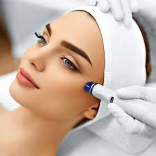

Tratamientos Faciales
Rinomodelación
La rinomodelación o rinoplastia sin cirugía, es un tratamiento médico estético basado en la corrección de pequeños defectos en el dorso nasal, punta de la nariz, desviaciones o asimetrías…. así como elevación de la misma. Pudiéndose realizar también en aquellas personas que se hayan sometido a una intervención quirúrgica y han quedado pequeñas imperfecciones que requieran de una corrección. No siempre los pequeños defectos en la anatomía nasal han de ser tratados en quirófano; con procedimientos inyectables (combinaciones de rellenos, toxina botulínica, retensores o hilos), bajo anestesia local, sin convalecencia y en pocas sesiones, se consiguen resultados espectaculares.
Labios
Los labios se deshidratan y se irritan fácilmente. Al envejecer presentan un aspecto más fino, desapareciendo el “bordeado o perfilado” y apareciendo el famoso “código de barras”; en ocasiones encontramos hiperpigmentaciones, siendo más común en la zona del labio superior, o pérdida de color y turgencia del bermellón, condicionado por factores medioambientales, solares, hormonales…
Botox
La toxina botulínica es producida por un tipo específico de bacteria. En grandes cantidades, puede ser venenosa. Sin embargo, solo se utilizan dosis pequeñas y débiles de toxina botulínica para reducir las arrugas faciales. Cuando se inyecta, la toxina botulínica bloqueadeterminadas señales nerviosas que producen la contracción de los músculos. Los músculos se relajan, con lo cual se reducen las arrugas. Este efecto dura aproximadamente entre 3 y 6 meses. Luego, los músculos vuelven a moverse y las arrugas reaparecen.
Plasma rico en plaquetas
PRP es un tratamiento que consiste en extraer una pequeña muestra de sangre del paciente y centrifugarla para obtener plaquetas que contienen factores de crecimiento tisular. Estos factores de crecimiento luego se aplican a través de microinyecciones superficiales en la piel. Es un método totalmente natural que utiliza un derivado de la sangre, exclusivo y propio de cada paciente que estimula la producción de colágeno, elastina y tejido epidérmico, lo que se traduce en una piel más firme, luminosa y de mejor calidad.
Ojeras y Bolsas
Las ojeras son asociadas al cansancio o enfermedades; otras veces son permanentes y se deben a causas genéticas o el paso del tiempo, la piel del contorno del ojo se hace más fina y menos elástica, los músculos palpebrales disminuyen su fuerza y tonicidad, la cavidad orbital se ensancha y aumenta su tamaño. Esto da lugar a que se acentúe el surco y las arrugas del párpado, la aparición de una coloración violácea o marrón. Con la correcta aplicación de tratamientos combinados y secuenciales específicos para la zona del surco infraorbitario no solo disimulamos, sino que conseguimos revertir la tonalidad y la profundidad de la zona periocular.
Papada o Doble Menton
La papada o doble mentón es una acumulación de grasa y/o descolgamiento de la piel bajo la barbilla. Éste es uno de los problemas estéticos que más preocupan sobre todo a partir de los 40 años, tanto en hombres como mujeres. Puede deberse a varios motivos: pérdida de elasticidad de la piel, acumulación de tejido adiposo, pérdida de fuerza en el músculo de la barbilla (mentalis) y de hipotrofia de la grasa de la borla.
Pómulos
La pérdida de volúmenes en el tercio medio facial, condiciona de una forma definitiva la posición de los volúmenes y estructuras tanto de esa zona como del tercio inferior, por ello El aumento de pómulos es una de las prácticas más habituales y demandadas en los tratamientos de Medicina Estética facial.